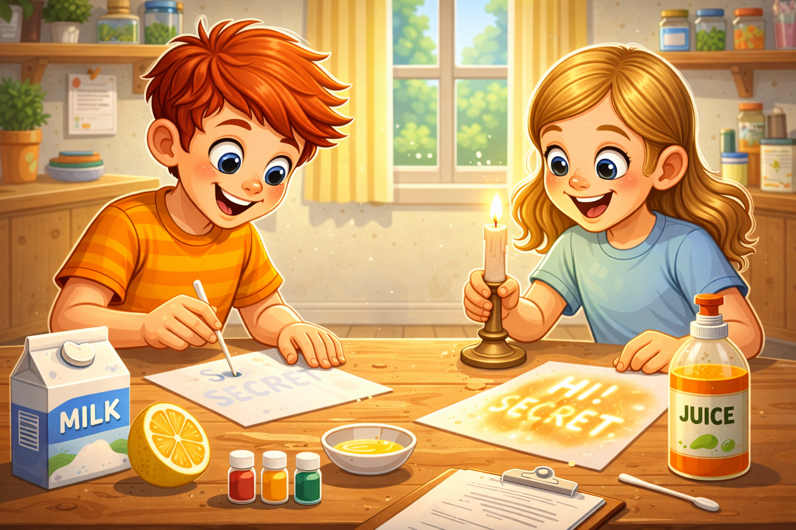
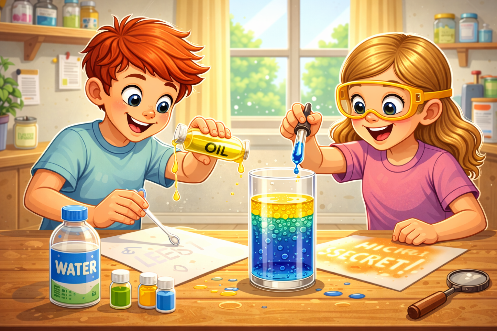
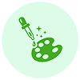
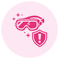
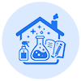
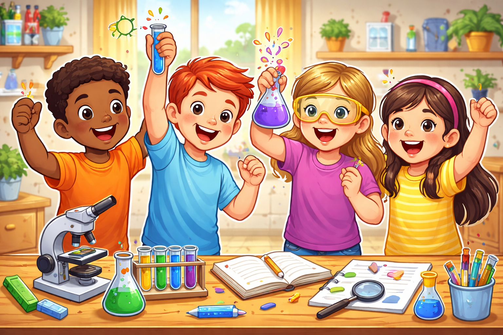
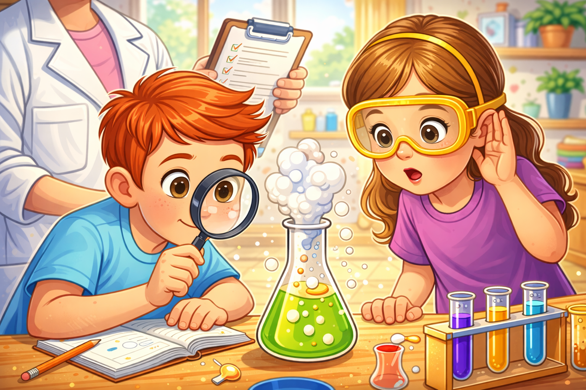
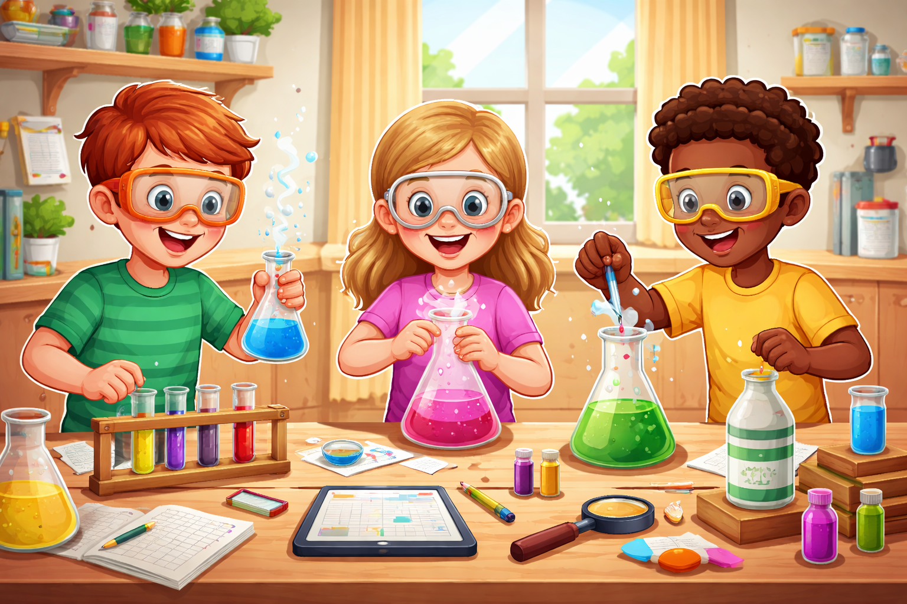

Safe, colorful, and bubbly science you can enjoy right at home — with a grown-up by your side! These exciting experiments are designed especially for curious kids who love to explore and discover. Using simple household items, children can see amazing reactions happen in real time.
How: Write with lemon juice, let dry. Heat gently with adult help to reveal the message.
Why it works: Lemon juice oxidizes (browns) when heated, revealing hidden writing.
Adult must handle heating. Keep flames away from paper edges.

Oil & Water Separation
Need: Water, oil, clear jar, food coloring
How: Fill jar with water, add colored water and then oil — watch them separate.
Why it works: Oil is less dense and doesn't mix with water, so it floats.
Do not drink the liquids. Clean up thoroughly.

Mix Your Own Chemical Reaction
Try safe combinations below. Slide the amounts and press MIX to see a fun animation.
Pick chemicals and press MIX!
Discover the Science Behind the Fun
Learn, explore, and experiment—safely!
How Reactions Work
When you mix two things together, they can react and change into something new. You might see bubbles, colors changing, or fizzing sounds. This happens because the ingredients interact in a special scientific way. That’s called a chemical reaction!

Why Colors Change
Some experiments change color when ingredients mix. This happens because the chemicals respond to each other. The colors help scientists understand what’s happening inside. It’s science—and art—working together!

Safety First, Scientists!
Always ask a grown-up to help before starting any experiment. Wear safety goggles if needed and keep hands away from your face. Never taste or smell the experiment ingredients. Safety makes science fun and worry-free!

Experimenting at Home
Many experiments use things you already have at home. Work on a clean table and keep your area tidy. Follow the steps carefully and take your time. Learning science at home can be exciting and safe!

Learning That Grows Curious Minds
Small experiments, big brain power
Hands-on chemistry experiments help kids understand the world through curiosity and discovery. By observing changes, asking questions, and predicting outcomes, children build strong critical-thinking skills. These activities improve problem-solving, focus, and attention to detail in a fun way. Kids also develop creativity as they explore colors, reactions, and cause-and-effect relationships. Following steps boosts memory and listening skills. Most importantly, experimenting builds confidence and a love for learning that lasts a lifetime.

Enhanced Focus & Attention
Hands-on experiments encourage kids to slow down and pay attention to each step. Watching reactions carefully helps improve concentration and patience. Following simple instructions builds listening and observation skills. Over time, kids learn to stay focused while enjoying the learning process.

Improved Learning Skills
Experiments turn ideas into real experiences kids can see and understand. Children learn to ask questions, make predictions, and solve problems. This strengthens memory, logical thinking, and understanding of cause and effect. Active learning helps kids feel confident in exploring new concepts.
Happy & Confident Kids
Fun experiments create moments of excitement and joy for children. Seeing successful results builds confidence and self-belief. Kids feel proud when they complete activities on their own. A happy learning experience encourages curiosity and a positive mindset.